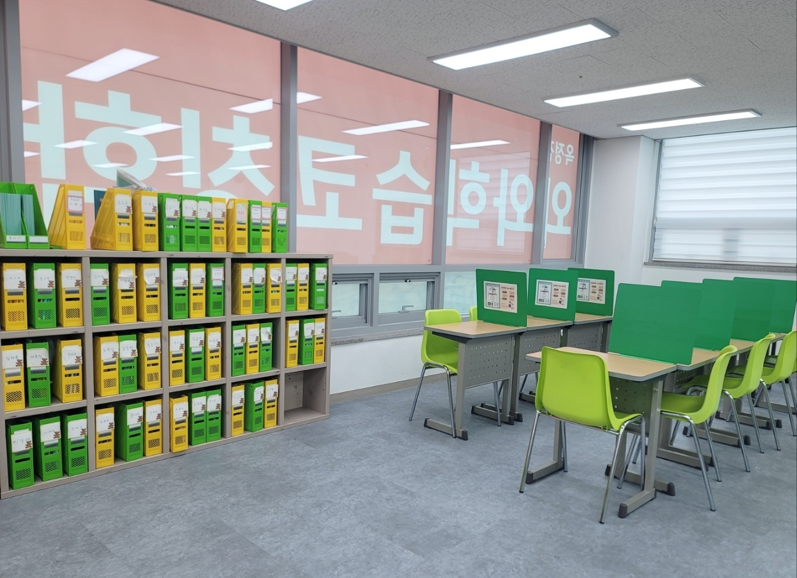
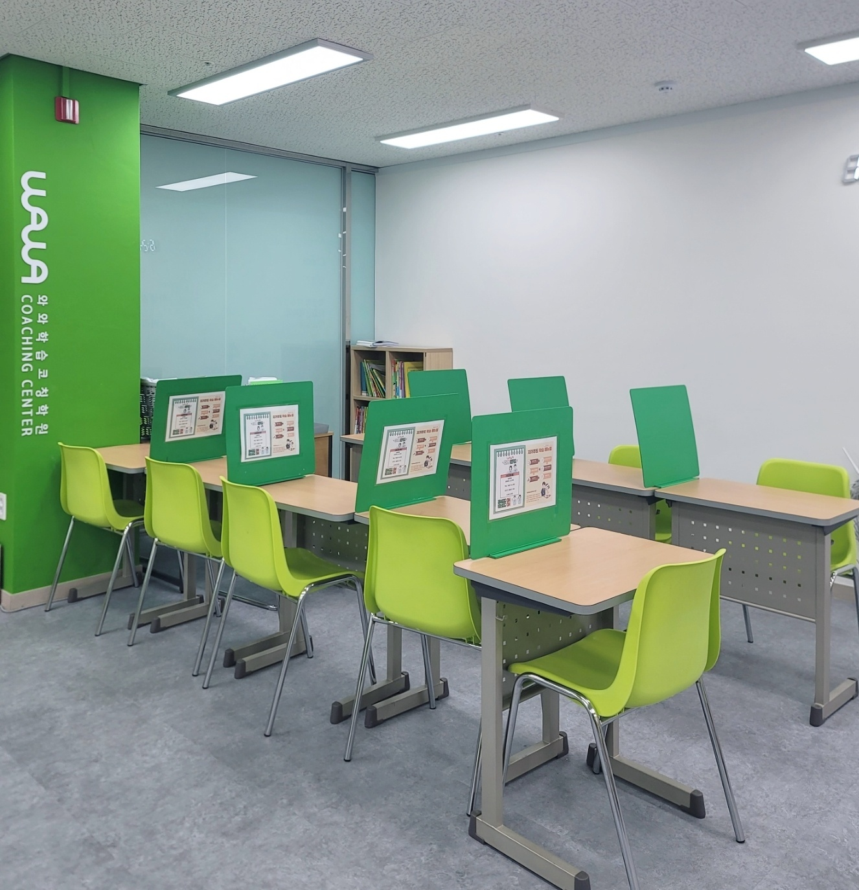
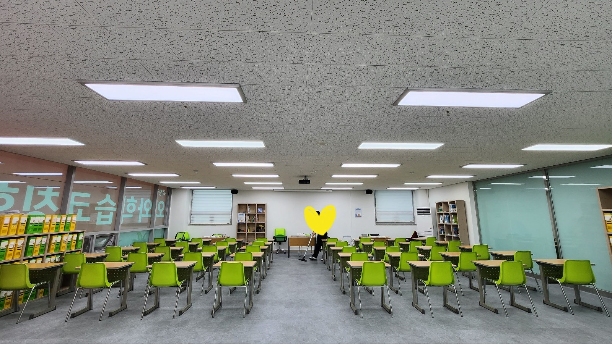
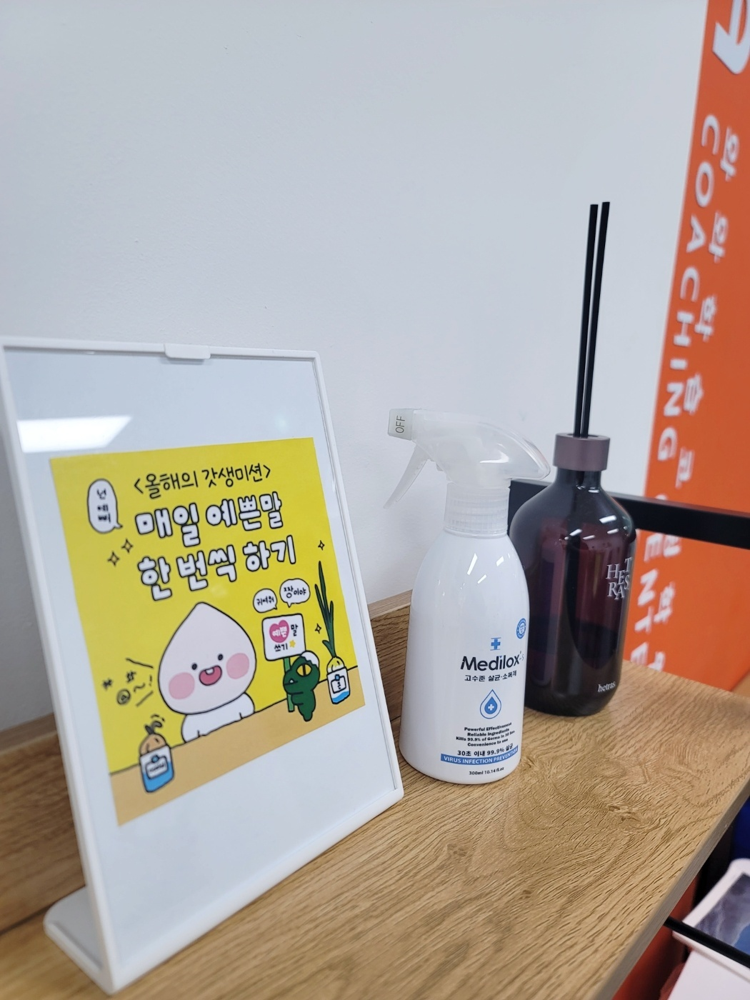

안녕하세요, 경기 양주시 옥정동의 와와학습코칭 옥정점입니다. 옥정로에 있는 센터로, 옥정초등학교(옥정초)·연푸른초등학교(연푸른초)·옥정호수초등학교(옥정호수초)·천보초등학교(천보초)·율정초등학교(율정초) 아이들이 가까이에서 오가는 옥정신도시 동네에 있습니다.
오늘은 교실 사진에서 가장 먼저 눈에 띄는 것부터 이야기해 보려 합니다. 벽 한 면을 채운 파일박스 수납장입니다. 칸마다 아이 한 명의 이름이 붙어 있고, 그 안에 그 아이의 교재와 학습지가 들어 있습니다.
초등 공부에서 제일 자주 끊기는 것은 '어디까지 했는지'입니다
초등학생 공부에서 실력보다 먼저 무너지는 것은 연속성입니다. 지난번에 어디까지 풀었는지, 틀린 문제를 다시 봤는지, 오늘은 어디서 이어서 시작해야 하는지 — 이 세 가지가 매번 흐릿해집니다.
이유는 대체로 단순합니다. 교재가 아이 가방 안에 있기 때문입니다. 가방은 학교와 집과 학원을 오가고, 그 사이에 책 한 권은 책상 위에, 학습지 한 장은 사물함에 남습니다. 오늘 앉아서 "어디부터 하지?"를 다시 찾는 데 10분이 걸리면, 그 10분은 매번 사라집니다.
옥정점이 개인 파일함을 쓰는 이유가 여기 있습니다. 교재를 들고 다니지 않고 센터에 둡니다. 아이는 자기 이름이 붙은 칸에서 파일박스를 꺼내 자리에 앉고, 끝나면 그 자리에 다시 넣습니다. "책을 안 가져왔어요"라는 말이 나올 자리가 없어집니다.

자리에 앉는 순간부터 오늘 할 일이 정해져 있게
위 사진은 옥정점의 자습 좌석입니다. 책상마다 초록 가림판이 세워져 있고, 가림판에는 학습 안내가 담긴 액자가 걸려 있습니다. 옆 친구가 몇 쪽까지 풀었는지 보이지 않는 구조이면서, 고개만 들면 오늘 무엇을 어떤 순서로 해야 하는지가 눈앞에 있는 구조입니다.
초등 아이에게 "알아서 해 봐"는 대체로 통하지 않습니다. 의욕이 없어서가 아니라, 할 일의 순서를 스스로 세우는 일 자체가 아직 배워야 할 기술이기 때문입니다. 그래서 옥정점에서는 순서를 눈에 보이게 두는 쪽을 택합니다. 파일박스를 꺼내고, 지난번에 표시해 둔 곳부터 시작하고, 정해진 분량을 끝내고, 채점하고, 틀린 것을 표시해 다시 넣는 것까지가 한 흐름입니다.
이 흐름이 몇 주 반복되면 아이가 먼저 움직입니다. 코치가 "오늘은 여기부터"라고 말해 주기 전에 지난번 표시를 찾아 펴는 아이가 생깁니다. 자기주도학습이라는 말은 이 장면을 가리킵니다. 혼자 두는 것이 아니라, 혼자 할 수 있는 구조를 만들어 두는 것입니다.

넓은 공간이 주는 것은 '자리 수'가 아닙니다
옥정점은 학습실이 넓은 편입니다. 다만 공간이 넓어서 좋은 이유는 아이를 많이 앉힐 수 있어서가 아닙니다. 같은 시간에 서로 다른 것을 해도 부딪히지 않기 때문입니다.
같은 학년이어도 한 아이는 분수 개념을 다시 잡고 있고, 다른 아이는 서술형 문장을 다듬고 있습니다. 한 반 전체가 같은 진도를 나가야 하는 구조라면 이 차이는 '뒤처짐'이 되지만, 각자 자기 파일박스를 펴는 구조에서는 그냥 다른 단계일 뿐입니다. 뒤에서 걸어오는 아이를 기다려 주는 것도, 앞서가는 아이를 붙잡지 않는 것도 공간이 넉넉해야 가능합니다.
초등 고학년은 특히 그렇습니다. 분수와 소수의 계산, 비와 비율, 도형의 넓이처럼 한 번 비면 다음 단원에서 그대로 걸리는 자리가 몇 군데 있습니다. 진도를 맞추느라 그냥 지나가면 중학교에서 다시 만납니다. 각자 속도로 갈 수 있으면 비어 있는 곳으로 되돌아가는 일이 부끄럽지 않습니다.

데스크 위의 작은 액자 한 장
옥정점 데스크 위에는 작은 액자가 하나 놓여 있습니다. "올해의 갓생미션 — 매일 예쁜말 한 번씩 하기"라고 적혀 있습니다.
공부 이야기를 하다가 갑자기 말투 이야기냐고 하실 수 있지만, 초등 교실에서 이 둘은 생각보다 가깝습니다. 자기 실수를 두고 "나는 못해"라고 말하는 습관이 붙은 아이는 틀린 문제를 다시 보는 일 자체를 피합니다. 채점이 자기 평가처럼 느껴지기 때문입니다. 반대로 "여기만 다시 보면 되겠네"라고 말할 줄 아는 아이는 오답을 그냥 할 일 목록으로 받아들입니다.
그래서 오답을 확인할 때는 표현을 정해 두는 편이 좋습니다. "왜 이걸 틀렸어?" 대신 "이 문제는 어디까지 맞고 어디서 갈라졌을까?"입니다. 같은 오답을 보면서도 아이가 앉아 있는 시간이 달라집니다.
집에서 해 볼 수 있는 세 가지
- 교재 한 권의 자리를 정해 주세요 — 가방이 아니라 책상 위 정해진 칸이면 충분합니다. 자리가 정해지면 "어디 갔지?"에 쓰는 시간이 사라지고, 그 시간이 그대로 공부 시간이 됩니다.
- 끝낸 곳에 표시를 남기게 하세요 — 접착 메모지 한 장이면 됩니다. 오늘 끝난 쪽에 붙여 두면, 다음에 앉았을 때 시작점을 찾느라 헤매지 않습니다. 기록은 기억보다 힘이 셉니다.
- 틀린 문제는 그날 말고 사흘 뒤에 다시 — 바로 다시 풀면 방금 본 풀이가 남아 있어 맞히기 쉽습니다. 며칠 지난 뒤에도 풀린다면 그때가 진짜 아는 것입니다.
옥정점 찾아오시는 길
와와학습코칭 옥정점은 경기 양주시 옥정로 218, 신운정튼튼프라자 305호에 있습니다. 옥정초등학교·연푸른초등학교·옥정호수초등학교·천보초등학교·율정초등학교 아이들이 가까이에서 오갈 수 있는 곳입니다.
학습 진단과 상담은 무료입니다. 아이가 지금 쓰고 있는 교재 한 권을 들고 오셔서, 어디까지 풀었고 어디서 막혀 있는지 함께 펴 보는 것부터 시작하셔도 좋겠습니다.